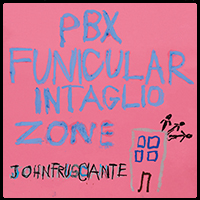

„PBX Funicular Intaglio Zone” to najnowszy studyjny album Johna Frusciante, byłego gitarzysty Red Hot Chili Peppers, którego oficjalna premiera miała miejsce 24 września 2012 roku. Album został wydany w kilku formatach: CD, vinyl oraz na kasecie za pośrednictwem wytwórni Record Collection.
Wydanie tego albumu poprzedzone zostało EP-ką „Letur Lefr”. Na obu tych wydawnictwach widzimy zmianę stylu muzyka, zafascynowanego elektroniką oraz nowym, innym niż dotychczas sposobem tworzenia.
Nazwa albumu, jak powiedział to sam autor, odnosi się do wewnętrznego systemu komunikacji , a styl nazwany został jako „progresywny synth pop”. Utwory na tą płytę powstały w 2011 roku.
W tworzeniu albumu John Frusciante korzystał w niewielkim stopniu z gitary, a głównie z syntezatorów. Użyte zostały również sample i automat perkusyjny. Na płycie usłyszeć możemy również Kinetic 9, Laena Geronimo oraz Felipe Evangelista.
Produkcją płyty jak zwykle zajął się John Frusciante.
Tracklista:
1.”Intro/Sabam” 2:40
2.”Hear Say” 3:47
3.”Bike” 4:24
4.”Ratiug” 6:26
5.”Guitar” 2:17
6.”Mistakes” 3:50
7.”Uprane” 4:55
8.”Sam” 4:21
9.”Sum” 4:18
Japan Bonus:
10.”Walls and Doors” 4:01
11.”Ratiug (Acappella version)” 5:15